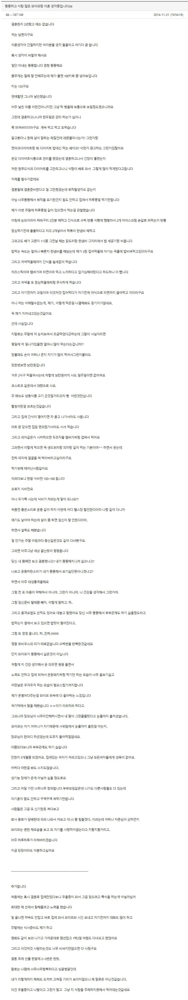

유부남이 말하는 뚱뚱한 와이프랑 같이 살기싫은 이유
댓글
일단 뚱뚱해지면 짜증이 존나 늠.
그리고 아침 저녁 계속 피곤하다. 뭔가 주도적으로 청소도하고
바깥일도 하고 하는 의지가 사라져버림.
당연히 음식은 배터지게 밀어넣으니 속은 계속 안좋고
컨디션도 오락가락이고 거기에 외모가 빻아버리니
결국 사람이 육체적 정신적으로 맛이감
당연히 이 모든 피해는 가족들에게 돌아오고..
종종 이혼숙려보면 부인이나 남편중에 외모적으로
호감가는 사람은진짜 없음.
둘다 고도비만이거나 한쪽은 존나뚱뚱 한쪽은 무슨 폐병환자처럼 말라감.
저정도면 폭식관련된 정신병 아님? 섭식장애 뭐 이런거
이정도면 잘 때 몰래 위고비 꼽아라 제발
12년전글인데, 이젠 위고비나 마운자로로 극복이 되니까 얼마나 좋아졌냐
12년이면 그사이에 질환이 오거나 임신 준비과정에서 이혼했을듯
이새끼들 또 쉴새없이 혐오하네 ㅋㅋㅋㅋ
의사가 비만이고 먹는거 못참는거 병이라는데 또 킹지가 부족하늬 뭐늬 지들은 딸딸이도 못끊으면서
화내지마 무서웡
나도 돼지지만 이건 좀
니 아이디 무섭다.....흥분한 돼지 같에
저정도면 그나마 결혼하기위해 잠시동안이나마 초인적인 능력을 발휘해서 정상체중 만든게 대단한듯
저글 10년도 넘었는데 아직 살아있을까?